Game guides
These are the guides the game itself shows during a campaign. Press the ? button beside your advisor to bring them up.
- Recruitment System
- Buildings, with the governments and the treasury on Government
- Resource Export/Supply
Siege and Blockade Effects
When a settlement is under siege for 1 turn, the following penalties are applied:
- 5% tax penalty
- Trade suspended
- 2.5% penalty to population growth
Since 2 turns of being under siege and until the sixth turn, the penalties increase considerably:
- Additional 5% tax penalty
- Additional 2.5% penalty to population growth
Blockade Effects
- Trade suspended
- 2.5% penalty to population growth
Optimizing Campaign AI Performance
To ensure optimal AI behavior and maintain a dynamic campaign experience, it is advisable to save and reload your game frequently. This action addresses a known issue where the AI may become passive.
For best results, reload your saved game every 8 turns.
Faction mechanics
These factions also have a guide of their own, on the faction's page.
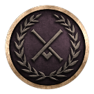
Achaean League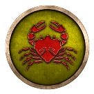
Acragas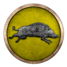
Aetolian League Antigonid Kingdom
Antigonid Kingdom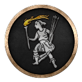
Ardiaei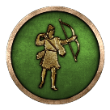
Asti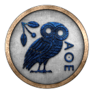
Athens- Bactria
- Bessi
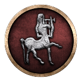
Bithynia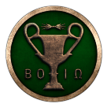
Boeotians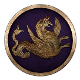
Bosporans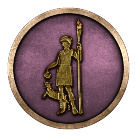
Cabyle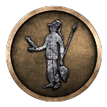
Cappadocia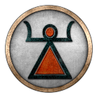
Carthage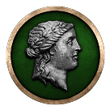
Chrysaorian League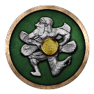
Cilician Pirates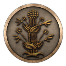
Cyrene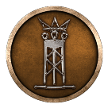
Cyzicus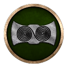
Dardania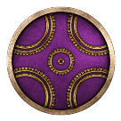
Delmatae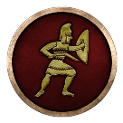
Dentheletae- Elis
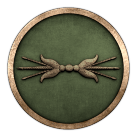
Epirus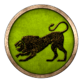
Galatians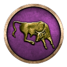
Gortyn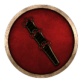
Heraclea Pontica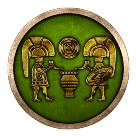
Iapodes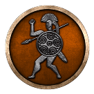
Illyrian Kingdom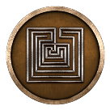
Knossos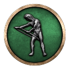
Kydonia- Labeatae
- Liburni
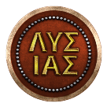
Lysiad Kingdom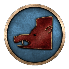
Lyttos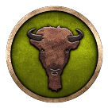
Maedi- Massalia
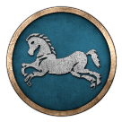
Massylii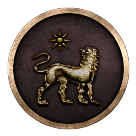
Miletus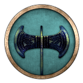
Odrysian Kingdom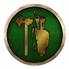
Olbia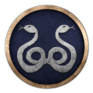
Pergamon- Pontic Pentapolis
- Pontus
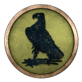
Ptolemaic Empire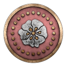
Rhodes- Rome
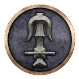
Seleucid Empire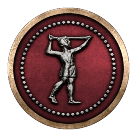
Selge- Semnones
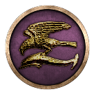
Sinope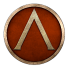
Sparta Syracuse
Syracuse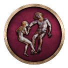
Triballi